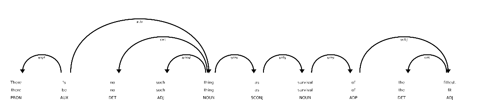
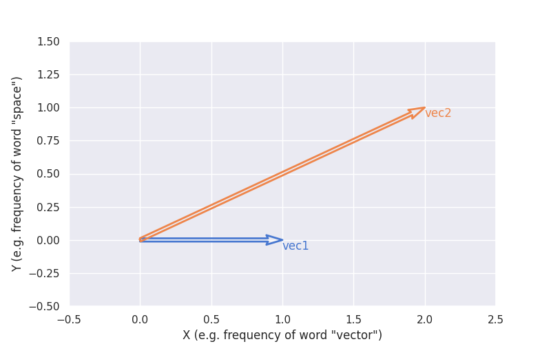
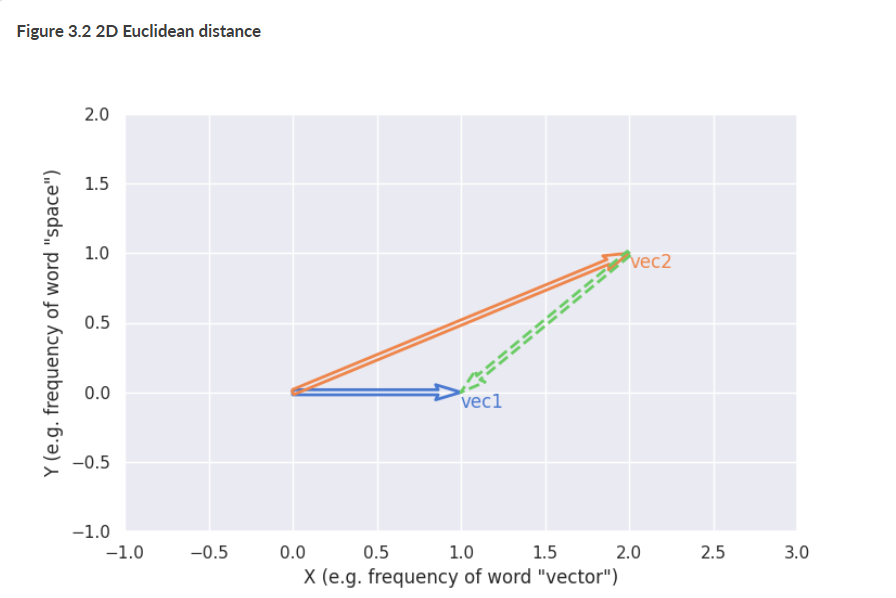
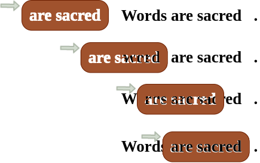
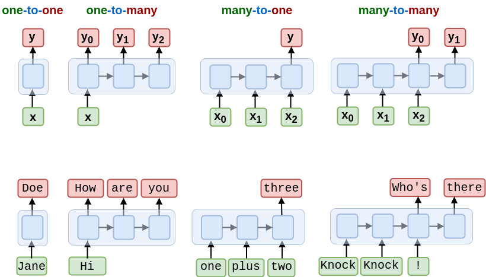
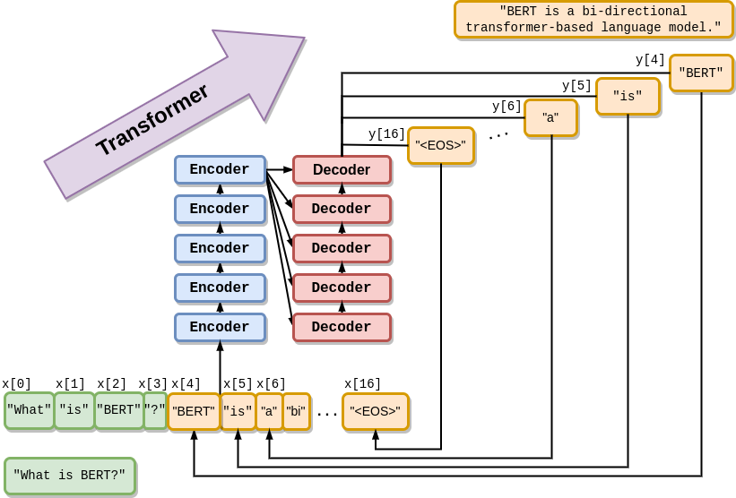
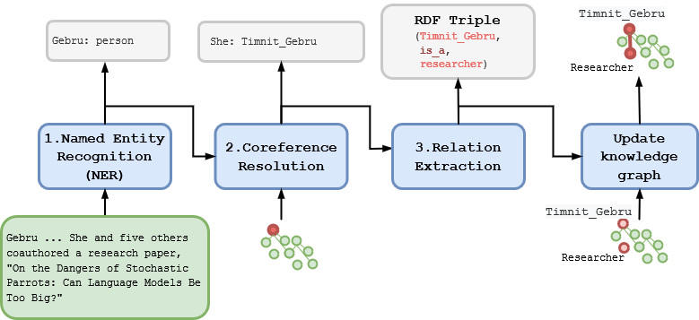
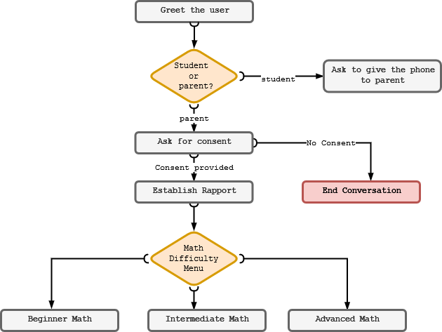

The book "Natural Language Processing in Action" by Hobson Lane and Maria Dyshel provides a
comprehensive guide on
In Natural Language Processing in Action, Second Edition you will learn how to:
Process, analyze, understand, and generate natural language text
Build production-quality NLP pipelines with spaCy
Build neural networks for NLP using Pytorch
BERT and GPT transformers for English composition, writing code, and even organizing your
thoughts
Create chatbots and other conversational AI agents
Build your NLP skills from the ground up with this updated bestseller, now featuring the latest
Python
packages, Transformers, HuggingFace tools, and chatbot frameworks. Perfect for those looking to dive
into modern NLP techniques, this book provides a comprehensive, hands-on approach to mastering
language
processing.
Machines that read and write: a natural language processing overview
Programming languages and natural languages serve distinct purposes and exhibit unique
characteristics,
though both are used for communication. Programming languages are artificial, structured systems
created
with strict syntax and rules, designed to instruct computers to perform specific tasks. They
prioritize
precision and unambiguity, as even a minor syntax error can lead to failure in execution.
Natural languages, however, are organic and evolve over time, influenced by culture, region, and
social
factors.
Unlike programming languages, natural languages are filled with nuances, ambiguity, and
context-dependent meanings, allowing for rich expression but also making them challenging for
machines
to understand fully. While programming languages aim for clarity and efficiency to ensure
computers
interpret commands accurately, natural languages embrace complexity and flexibility, enabling
humans
to
convey emotions, intentions, and abstract ideas.
Understanding the differences between these two types
of languages is essential in natural language processing, where the goal is often to bridge the
gap
and
enable computers to interpret human language with precision and contextual understanding.
Encoding involves transforming raw text data, which is unstructured and inherently
difficult
for
machines to process, into a structured numerical format known as a vector. This numerical
representation
captures the semantic meaning of the text in a way that machines can work with, making it
possible
to
apply mathematical operations to language data.
In decoding, the numerical representation (vector) is processed by algorithms to
generate
natural language that closely matches the intended meaning captured in the vector. Decoding
models,
such
as those used in neural networks, leverage patterns in the data to predict and construct
sentences,
taking into account context, grammar, and semantics.
The end of chapter 1
Chapter 2
Tokens of thought (natural language words)
Parsing text into words and n-grams, also known as tokenization, is a fundamental process in
natural
language processing (NLP) that breaks down text into manageable units for computational
analysis.
Tokenization involves dividing a sentence or document into individual components called tokens,
which
can be single words, sub-words, or phrases.
For example, in a simple word tokenization approach, the
sentence "Tokenizing text is fun" would be split into ["Tokenizing", "text", "is", "fun"].
Beyond
single
words, n-grams—sequences of "n" words—capture context by grouping words together, creating
bigrams
like
["Tokenizing text", "text is", "is fun"] or trigrams like ["Tokenizing text is", "text is fun"].
These
n-grams help retain contextual information, allowing NLP systems to understand common phrases,
disambiguate meanings based on word combinations, and capture more nuanced language patterns
than
single
words alone.
tokenization involves splitting text into smaller units, known as tokens, which can be
individual
words, phrases, sentences, or even characters, depending on the application's requirements.
Tokenization and n-grams are especially useful in applications like text classification,
where they serve as features for models, and in language modeling, where they help predict the
next
word
in a sequence. Despite its simplicity, tokenization presents challenges, such as handling
punctuation,
special characters, and language-specific structures, especially in languages that lack clear
word
boundaries or follow complex grammatical rules. Tools like NLTK, spaCy, and HuggingFace’s
Tokenizers
offer robust solutions for these challenges, enabling tokenization to be performed effectively
across
multiple languages and use cases. By transforming raw text into structured, analyzable units,
tokenization lays the groundwork for a wide range of NLP applications, from sentiment analysis
to
machine translation.

Dependency parsing is a process in natural language processing (NLP) where the syntactic
structure of a sentence is analyzed by identifying relationships between words. Arrows show
dependency,
indicating how each word is syntactically related to another.
The end of chapter 2
Chapter 3
Math with words (TF-IDF vectors)

tokenization involves splitting text into smaller units, known as tokens, which can be
individual
words, phrases, sentences, or even characters, depending on the application's requirements.

Dependency parsing is a process in natural language processing (NLP) where the syntactic
structure of a sentence is analyzed by identifying relationships between words. Arrows show
dependency,
indicating how each word is syntactically related to another.
Parsing text into words and n-grams, also known as tokenization, is a fundamental process in
natural
language processing (NLP) that breaks down text into manageable units for computational
analysis.
Tokenization involves dividing a sentence or document into individual components called tokens,
which
can be single words, sub-words, or phrases.
For example, in a simple word tokenization approach, the
sentence "Tokenizing text is fun" would be split into ["Tokenizing", "text", "is", "fun"].
Beyond
single
words, n-grams—sequences of "n" words—capture context by grouping words together, creating
bigrams
like
["Tokenizing text", "text is", "is fun"] or trigrams like ["Tokenizing text is", "text is fun"].
These
n-grams help retain contextual information, allowing NLP systems to understand common phrases,
disambiguate meanings based on word combinations, and capture more nuanced language patterns
than
single
words alone.
Tokenization and n-grams are especially useful in applications like text classification,
where they serve as features for models, and in language modeling, where they help predict the
next
word
in a sequence. Despite its simplicity, tokenization presents challenges, such as handling
punctuation,
special characters, and language-specific structures, especially in languages that lack clear
word
boundaries or follow complex grammatical rules. Tools like NLTK, spaCy, and HuggingFace’s
Tokenizers
offer robust solutions for these challenges, enabling tokenization to be performed effectively
across
multiple languages and use cases. By transforming raw text into structured, analyzable units,
tokenization lays the groundwork for a wide range of NLP applications, from sentiment analysis
to
machine translation.
The end of chapter 3
Chapter 4
Finding meaning in word counts (semantic analysis)
In natural language processing, this marks a significant step toward enabling machines to grasp the
meaning of words. Earlier, TF-IDF (term frequency-inverse document frequency) vectors were
introduced as a way to assess the significance of words within a body of text. These vectors allowed
us to determine how important specific words or short phrases (n-grams) are within a document
collection, making them effective tools for searching text based on exact matches. However, TF-IDF
has its limitations—it primarily focuses on word frequencies and does not capture the deeper meaning
or relationships between words. To move beyond counting words, a more nuanced representation that
incorporates meaning is often necessary.
Word embeddings are a numerical representation of words in a continuous vector space,
where
similar words are positioned closer together. Each word is represented as a vector of numbers in
a
multi-dimensional space, capturing semantic relationships and context. The geometric arrangement
of
these vectors reflects the similarity and differences between words.
Understanding the meaning of words involves creating representations that capture their semantic
relationships. This is achieved through techniques such as word embeddings or topic modeling, which
generate topic vectors that represent the underlying concepts in text. These vectors go beyond
surface-level word counts, encapsulating deeper contextual relationships and meanings. By analyzing
how words co-occur and relate within a large corpus, these models position words, sentences, or even
documents in a multi-dimensional space, where similar ideas are represented closer together. This
allows for a richer and more meaningful analysis of text.
A confusion matrix is a valuable tool for evaluating the performance of classification
models, particularly in binary or multi-class problems. It provides a detailed breakdown of the
model's predictions by categorizing them into true positives, true negatives, false positives,
and
false negatives. True positives and true negatives represent correct classifications, while
false
positives and false negatives indicate errors made by the model. This matrix helps assess the
effectiveness of the model by calculating metrics such as accuracy, precision, recall, and
F1-score,
offering insights into areas where the model excels and where it requires improvement.
Semantic search leverages these topic vectors to retrieve information based on meaning rather than
exact keyword matches. This approach compares the similarity between the vector representation of a
query and those of potential results, identifying content that is contextually relevant. For
example, a search for "climate change solutions" could return documents discussing "renewable
energy" or "carbon offsets," even if those exact phrases were not used in the query. By focusing on
the relationships and context between words, semantic search provides a more intuitive and effective
way to find information.
As these techniques are applied to massive collections of documents, scalability becomes a critical
factor. Handling large corpora requires optimization techniques such as approximate nearest neighbor
search and distributed processing to maintain efficiency. Pre-trained language models like BERT or
Sentence Transformers, which can be fine-tuned for specific domains, make it possible to generate
meaningful topic vectors at scale. This enables robust applications in areas such as enterprise
search systems, large-scale text analysis, and intelligent recommendation engines, where capturing
and leveraging semantic meaning is essential for navigating vast amounts of data effectively.
The end of chapter 4
Chapter 5
Word brain (neural networks)
An artificial neuron in a neural network mimics a biological neuron by processing
inputs,
applying weights, and producing an output. It receives inputs each multiplied by a weight and
summed
together, along with a bias term. This weighted sum is passed through an activation function
that
introduces non-linearity and determines the output.
Building and improving neural networks involves a series of important steps, each contributing
to
the
overall effectiveness and accuracy of the model. The process begins with constructing a strong
base
layer,
which acts as the foundation for the network, enabling it to process data effectively and
provide a
structure for learning. Next, training the network using backpropagation is essential.
Backpropagation
adjusts the weights and biases of the network by propagating errors from the output back to the
input
layers, optimizing the network's predictions over multiple iterations. Implementing a basic
neural
network
in Python helps in understanding the fundamental principles, offering a practical foundation for
beginners.
Biological neurons and artificial neural networks are deeply connected, as the latter
are
inspired by the way the former function in the brain. A biological neuron consists of a cell
body,
dendrites, and an axon. It processes information by receiving signals through the dendrites,
integrating
them in the cell body, and transmitting the result as an electrical impulse through the axon to
other
neurons. The connections between neurons, called synapses, play a crucial role in modulating how
signals
are transmitted, with their strength adjusting based on learning and experience. Artificial
neural
networks mimic this process through mathematical abstraction.
Moving forward, using advanced frameworks like PyTorch allows for the development of scalable
neural
networks that can handle more complex tasks with greater efficiency. Adding multiple layers to
the
network,
known as stacking, enhances its depth and improves its ability to capture intricate patterns and
represent
data in more meaningful ways. Finally, tuning the neural network involves optimizing various
aspects,
such
as adjusting hyperparameters, fine-tuning activation functions, and improving model
architecture, to
achieve
superior performance and accuracy. Together, these steps form the backbone of designing,
training,
and
refining neural networks for a wide range of machine learning applications.
The end of chapter 5
Chapter 6
Word brain (neural networks)
Word embeddings, or word vectors, are numerical representations of words in a high-dimensional
space, where each word is mapped to a unique vector that captures its meaning, relationships,
and
context. Unlike traditional one-hot encoding, which assigns a unique binary vector to each word
without
considering relationships, word embeddings place semantically similar words closer to each other
in
the
vector space. For instance, words like "king" and "queen" or "apple" and "orange" would have
embeddings
that are relatively close to one another, reflecting their similarity in meaning.
Word embeddings are a technique in Natural Language Processing (NLP) that represent words as
vectors in a continuous space, capturing their meaning and relationships. Unlike traditional
methods,
embeddings place similar words closer together based on context. Techniques like Word2Vec,
GloVe,
and
FastText learn these representations from large text corpora. Word embeddings improve
machine
learning
models by enabling better understanding of word relationships, making tasks like sentiment
analysis,
translation, and text classification more accurate. They also form the foundation for
advanced
NLP
models like BERT and GPT.
Representing meaning with a vector allows models to perform computations on words that align
with
their
semantic properties. This makes it possible to solve tasks such as word analogy problems. For
example,
by using embeddings, a model can infer relationships like "king - man + woman = queen," because
the
vectors capture the directional relationships between these concepts. This capability highlights
the
power of embeddings in reasoning and language understanding.
Customizing word embeddings to create domain-specific vectors involves training embeddings on
specialized corpora, such as legal documents, medical texts, or industry-specific datasets. This
adaptation ensures that the embeddings capture the unique meanings and nuances of terms within a
particular domain, which can significantly improve the performance of models in domain-specific
tasks.
Reasoning with word embeddings involves applying these vectors in tasks like sentiment analysis,
text
classification, or clustering. For example, embeddings enable sentiment analysis by identifying
emotional tones in words based on their proximity to positive or negative terms in the vector
space.
Similarly, in text similarity tasks, embeddings help quantify how similar two pieces of text are
by
comparing their vector representations.
Neural network architecture is the design of layers and connections in a network, guiding
data
processing. It includes input, hidden, and output layers, where neurons apply weights and
activation
functions to produce outputs. Specialized architectures like CNNs for images and
transformers
for
language are tailored to specific tasks.
Finally, visualizing word embeddings is an important step in understanding how words are
positioned
in
the vector space. Techniques like t-SNE (t-Distributed Stochastic Neighbor Embedding) or PCA
(Principal
Component Analysis) reduce the dimensionality of embeddings, allowing them to be plotted in 2D
or
3D.
This visualization reveals clusters of related words and the relationships between them,
offering
valuable insights into how a model interprets language. For instance, in a visualization, words
related
to professions, emotions, or colors might form distinct clusters, reflecting their shared
characteristics. Together, these capabilities make word embeddings a powerful tool in modern
natural
language processing.
The end of chapter 6
Chapter 7
Finding Kernels of Knowledge in Text with Convolutional Neural Networks (CNNs)
Neural networks are a foundational tool in Natural Language Processing (NLP), enabling machines
to
process and understand human language by finding patterns in text sequences. These networks can
analyze
data at the word, phrase, or sentence level to capture contextual and semantic relationships.
One
effective type of neural network for NLP is the Convolutional Neural Network (CNN), which excels
at
identifying local features in sequences, such as n-grams, word dependencies, or positional
relationships
within sentences. Building a CNN using frameworks like PyTorch involves defining its
architecture,
which
typically includes convolutional layers to extract features, pooling layers to reduce
dimensionality,
and fully connected layers for making predictions.

Stencils for natural language text refer to templates or patterns used to identify and
process
repetitive or structured sequences in text. These stencils help NLP systems recognize
recurring
linguistic structures, like phrases or alignments, and are used in tasks such as text
generation,
sequence alignment, and summarization. By focusing on these patterns, stencils enhance
computational
efficiency and allow models to generalize across similar language structures, improving
tasks
like
translation and sentiment analysis.
Training a CNN involves feeding it labeled data, adjusting its parameters—such as weights and
biases—through backpropagation, and using optimization techniques like gradient descent to
minimize
error. An essential part of this process is the use of embedding layers, which transform words
into
dense vector representations that encode their semantic and syntactic properties. These
embeddings,
such
as Word2Vec or FastText, allow the model to understand word meanings and relationships, enabling
it
to
generalize better to unseen data. During training, embeddings are updated along with the CNN's
parameters, further refining the model’s ability to represent text.
A PyTorch 1D CNN on 4D embedding vectors detects patterns in sequential data by applying
filters
across embedding dimensions, identifying relationships or sequences. This method is
effective
for
tasks like text classification and sequence tagging.
The combination of embeddings and CNNs provides a powerful framework for a wide range of NLP
tasks.
For
instance, in text classification, the CNN extracts key features from the input text, while the
embedding
layer ensures the words are represented in a meaningful way. This makes CNNs effective for tasks
like
sentiment analysis, spam detection, and topic classification. With their ability to capture both
local
patterns and contextual relationships in text, CNNs, trained on embeddings, are a cornerstone of
modern
NLP systems, providing scalable and efficient solutions for real-world applications. Using tools
like
PyTorch simplifies this process, offering flexibility in designing, training, and fine-tuning
these
networks for diverse NLP challenges.
The end of chapter 7
Chapter 8
Reduce, Reuse, Recycle Your Words (RNNs and LSTMs)
Unrolling recursion helps demystify how RNNs process sequences, making it easier to see why they
excel
in tasks involving sequential or contextual data. By maintaining a hidden state that carries
information
forward, RNNs effectively "remember" what they have already processed, allowing them to handle
complex
relationships in data, such as dependencies between words or phrases. This understanding
naturally
leads
to identifying applications where RNNs are the best option. RNNs shine in scenarios where the
order
or
temporal nature of the input is critical, such as text generation, where predicting the next
word
depends heavily on the context of previous words, or language translation, where the structure
and
meaning of one sentence must be preserved while generating its equivalent in another
language.

Recycling tokens involves reusing inputs in different configurations (one-to-one,
one-to-many,
etc.)
to handle tasks like classification, translation, and text generation. This flexibility
allows
models to maintain context and adapt to various NLP challenges.
Beyond text generation and translation, RNNs are also highly effective for tasks like speech
recognition, where they process audio signals as sequential data to transcribe spoken language
accurately. In sentiment analysis, RNNs can understand the emotional tone of a piece of text by
analyzing word combinations and contextual clues throughout the sentence or paragraph.
Additionally,
RNNs excel in tasks like time-series forecasting, where historical data points are used to
predict
future trends, or video processing, where frames are analyzed sequentially to understand
movement or
activity. These applications leverage the RNN's ability to capture both short-term and long-term
dependencies, making them particularly useful in domains that rely on sequential reasoning or
contextual
understanding.
In short, RNNs are the go-to choice for applications that require handling data as sequences,
preserving
context across steps, and leveraging the order of inputs to generate meaningful outputs.
Understanding
how RNNs unroll their recursion and recycle their memory can help you design better solutions
for
tasks
that depend on sequential data, making them an indispensable tool in the NLP and broader machine
learning toolkit.
Recurrent Neural Networks (RNNs) are designed to retain information across sequences by
using
hidden
states that carry context from one step to the next. This allows them to capture
dependencies
and
relationships, such as word order or temporal patterns, in data. Although traditional RNNs
struggle
with long-term memory due to issues like vanishing gradients, advanced variants like LSTMs
and
GRUs
address this by selectively preserving important information, making them highly effective
for
tasks
such as language modeling, translation, and speech recognition.
The end of chapter 8
Chapter 9
Stackable deep learning (Transformers)
Transformers are powerful tools in Natural Language Processing (NLP) due to their unique
architecture
and ability to process sequential data efficiently while capturing both local and global
dependencies.
Unlike traditional models like RNNs, which process sequences step by step and struggle with
long-range
dependencies, transformers leverage a self-attention mechanism. This mechanism assigns different
weights
to each token in a sequence based on its relevance to other tokens, enabling the model to focus
on
important parts of the input regardless of their position. This ability to process all tokens in
parallel allows transformers to capture context comprehensively, making them far more efficient
and
accurate for large-scale NLP tasks.

Auto-regressive transformers generate sequences by recycling their outputs into their
inputs,
using
each generated token as part of the input for the next step. This iterative process ensures
the
model maintains context, allowing it to produce coherent and contextually accurate text.
This
approach is key to tasks like text generation, translation, and conversational AI, where
maintaining
continuity is essential.
A key feature that makes transformers so versatile is their consistent encoding shapes, which
enable
limitless stacking of layers. Each layer processes the input sequence and outputs
representations of
the
same shape, ensuring that the next layer can seamlessly build on this output. This stackable
design
allows transformers to refine and enhance the understanding of data layer by layer,
progressively
capturing more complex relationships and patterns. For example, in tasks like machine
translation,
earlier layers may focus on individual word embeddings, while deeper layers capture
sentence-level
semantics and contextual nuances. This hierarchical refinement makes transformers capable of
understanding language in a sophisticated and scalable way.
The ability to stack layers is essential for building powerful transformer-based models like
BERT
and
GPT, which use dozens or even hundreds of layers to achieve state-of-the-art performance. Each
additional layer allows the model to extract increasingly abstract and high-level features,
improving
its ability to perform complex tasks such as summarization, text generation, and language
understanding.
This limitless stacking potential is why transformers have become the backbone of modern NLP,
providing
the flexibility and scalability required to handle diverse applications. Combined with their
parallel
processing capabilities, transformers represent a paradigm shift in how NLP models are designed,
setting
the stage for groundbreaking advancements in artificial intelligence.
Transformers use consistent encoding shapes to ensure that the output of each layer matches
the
input dimensions required by the next, making layers easily stackable. This design allows
the
model
to refine representations at each layer, capturing increasingly complex patterns in the
data.
The
stackable architecture is essential for tasks like language modeling and translation, where
depth
improves understanding and performance.
The end of chapter 9
Chapter 10
Large Language Models in the real world
Conversational Large Language Models (LLMs) represent a major advancement in artificial
intelligence, capable of engaging in human-like dialogue across a wide range of topics. These
models
are
built using transformer architectures, which rely on self-attention mechanisms to process and
understand
the relationships between words and phrases in a sequence. This allows LLMs to generate coherent
and
contextually relevant responses, even in complex conversations. They are trained on massive
datasets
comprising diverse text sources, exposing them to various languages, styles, and contexts.
Through
supervised learning, the models learn to replicate patterns and relationships in the data, and
reinforcement learning, often guided by human feedback (e.g., Reinforcement Learning with Human
Feedback
or RLHF), refines their behavior to align with human preferences. This combination of training
techniques allows conversational LLMs to perform tasks ranging from casual chat to answering
technical
questions, summarizing information, and even solving complex problems.
By generating 10 different responses with a maximum output length of 5 tokens, the code
showcases
the variability of the model's outputs. The responses, extracted and stored in a list,
highlight
the
probabilistic nature of language models, which generate diverse and sometimes inconsistent
answers.
Scatterplot of the size vs release date for LLMs with red diamond markers for proprietary
models
such as GPT-4 with approx 1.5 trillion parameters and blue circles for open source models
such
as
BLOOM with almost 200 billion parameters
However, these models are not without limitations, and significant effort is invested in
ensuring
they
operate within ethical and safety boundaries. Developers implement safeguards to prevent LLMs
from
producing harmful, offensive, or misleading content. These safeguards include carefully curating
training data, fine-tuning the model to avoid generating certain types of outputs, and
incorporating
dynamic filtering mechanisms that analyze user prompts in real time. These measures aim to align
the
model's responses with ethical guidelines, ensuring it behaves responsibly in a variety of
situations.
Despite these safeguards, some users attempt to "jailbreak" LLMs, exploiting their flexibility
to
bypass
restrictions and elicit outputs that programmers explicitly intended to block. Jailbreaking
typically
involves crafting prompts or using manipulative techniques to trick the model into generating
responses
that violate its ethical programming. For example, a user might structure a prompt to disguise
harmful
intent or frame a query in a way that bypasses filters. Such exploits can lead to outputs that
may
be
controversial, offensive, or harmful, raising concerns about the robustness of safety mechanisms
in
conversational LLMs. While these attempts demonstrate the adaptability and creativity of the
models,
they also expose vulnerabilities in their design and highlight the need for continuous
improvement.
Addressing the challenge of jailbreaking involves a multi-faceted approach. Developers refine
training
data to improve the model's alignment with ethical guidelines, design more sophisticated prompt
filtering systems, and introduce real-time monitoring to detect and mitigate manipulative
behavior.
Additionally, incorporating user feedback plays a crucial role in identifying and addressing
weaknesses,
ensuring the model evolves to meet safety and ethical standards. The balance between maintaining
the
openness and adaptability of LLMs while enforcing robust safety measures is a delicate one. On
one
hand,
the model must be flexible enough to engage in diverse conversations and adapt to user needs. On
the
other, it must be constrained enough to avoid producing harmful or unintended content.
The end of chapter 10
Chapter 11
Information extraction and knowledge graphs (grounding)
Building a knowledge graph from text is a comprehensive process that transforms unstructured
information
into a structured format, capturing entities and their relationships in a way that is both
interpretable
and actionable. The first step in this process is Named Entity Recognition (NER), which
identifies
key
entities mentioned in the text, such as individuals, organizations, locations, and other
significant
terms. These entities serve as the foundational nodes of the knowledge graph and represent the
key
pieces of information that will be connected through relationships.
A knowledge graph is a structured representation of entities and the relationships between
them,
organized in a graph format where nodes represent entities (e.g., people, places, or
concepts)
and
edges represent their connections.
Once the entities are identified, the next step involves dependency parsing, which analyzes the
grammatical structure of sentences to determine how words and phrases relate to one another.
This
analysis creates a dependency tree, showing relationships like subjects, objects, and
predicates, as
well as modifiers that provide additional context. Dependency parsing is essential for
understanding
the
structure of the text and identifying the connections between entities, enabling a deeper
understanding
of how the information fits together.
With the entities and their grammatical relationships established, the process moves to relation
extraction, where the relationships between entities are identified and formalized into
knowledge
triples. A knowledge triple follows the format (subject, predicate, object), representing a
single
fact
or piece of information. For example, relationships might include associations such as "is a,"
"works
at," or "was founded in," which provide meaning and context to the entities. These triples are
then
used
to construct the knowledge graph, with the entities forming the nodes and the relationships
forming
the
edges.
The final step is building or updating the knowledge graph, a structured representation of the
extracted
information. This graph organizes data into a network of interconnected nodes and edges,
allowing
for
efficient querying and reasoning about relationships. The knowledge graph creates a system that
is
not
only human-readable but also machine-interpretable, making it a powerful tool for various
applications.
It enables machines to understand and process complex information, derive insights, and support
advanced
capabilities like semantic search, recommendation systems, and intelligent question
answering.

A knowledge extraction pipeline automatically extracts structured information from
unstructured
text
to build or update a knowledge graph. It involves steps like Named Entity Recognition (NER)
to
identify entities, coreference resolution to link related mentions, and relation extraction
to
capture relationships as triples.This process transforms raw text into structured data,
enabling
applications like semantic search and question answering.
By following these steps, knowledge graphs turn raw text into a structured, interconnected
framework
of
information. This process makes it easier to discover patterns, infer new relationships, and
integrate
diverse data sources into a unified system. Knowledge graphs are widely used across industries,
from
powering search engines to enabling intelligent virtual assistants, and their ability to
transform
unstructured data into structured knowledge is a cornerstone of modern AI applications.
The end of chapter 11
Chapter 12
Getting Chatty with dialog engines
Chatbot applications have become an essential tool for businesses and individuals,
revolutionizing
customer support, virtual assistance, and user engagement. These chatbots can generally be
divided
into
two main types: rule-based systems and generative models. Rule-based chatbots operate on
pre-defined
scripts and decision trees, following a fixed logic to respond to specific inputs. They are
predictable
and efficient for handling structured tasks, such as providing FAQs or processing transactions.
However,
their rigid nature limits their ability to adapt to complex or unexpected queries, making them
less
suitable for dynamic, open-ended conversations.
The chatbot flow diagram outlines how a chatbot processes user input through Natural
Language
Understanding (NLU) and generates responses via Natural Language Generation (NLG). The NLU
stage
interprets user intent, extracts relevant information, and identifies patterns, while the
conversation manager determines the appropriate response. The NLG stage generates replies
using
methods like deep learning, templates, or retrieval-based systems, enabling the chatbot to
handle
diverse queries effectively.
In contrast, generative model chatbots, powered by Large Language Models (LLMs), leverage
advanced
neural networks to create contextually relevant and dynamic responses. These models, such as GPT
or
ChatGPT, can generate human-like interactions, enabling them to handle a broader range of topics
and
engage in more natural conversations. Their flexibility allows them to understand and respond to
nuanced
queries, making them ideal for applications like virtual personal assistants, creative writing,
or
complex customer support scenarios. However, generative models have limitations. They rely on
pre-trained datasets, which can result in outdated or inaccurate responses, and may sometimes
generate
irrelevant or nonsensical answers because they predict words based on statistical patterns
rather
than
grounding their outputs in real-time information or factual data.
To overcome these challenges, generative chatbots can be augmented with information retrieval
systems.
This approach integrates search functionality, enabling the chatbot to fetch accurate,
up-to-date,
and
domain-specific information from external sources, such as databases, knowledge bases, or the
web.
For
example, when a user asks a chatbot about current events or specific company policies, the
chatbot
can
use a retrieval mechanism to access and deliver precise answers, bridging the gap between
generative
flexibility and factual accuracy. This hybrid model combines the strengths of generative
models—such
as
adaptability and conversational fluency—with the reliability of rule-based or retrieval-enhanced
systems.

The Math Chatbot Tutor Conversation Diagram outlines a chatbot's flow to assist with math
tutoring.
It begins by identifying whether the user is a student or parent, requesting parental
consent if
necessary. With consent, the chatbot establishes rapport and offers a Math Difficulty Menu
with
options for Beginner, Intermediate, or Advanced Math. This structured flow ensures the
chatbot
tailors its interaction to user roles and needs.
This combination is particularly powerful for applications requiring both dynamic interaction
and
trustworthy responses. For instance, in customer support, a generative chatbot augmented with
information retrieval can handle complex user queries, escalate issues to live data, and provide
accurate solutions without requiring manual intervention. Similarly, in educational or
healthcare
settings, such a system can deliver personalized, fact-based responses while maintaining a
conversational tone. By blending the conversational capabilities of generative models with the
precision
of search systems, businesses and developers can create chatbots that are not only engaging but
also
reliable and effective in diverse use cases.